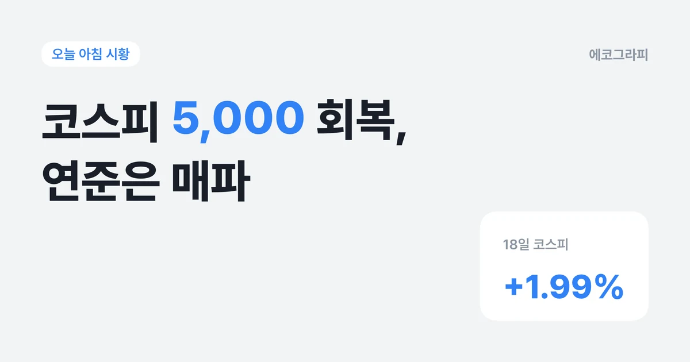
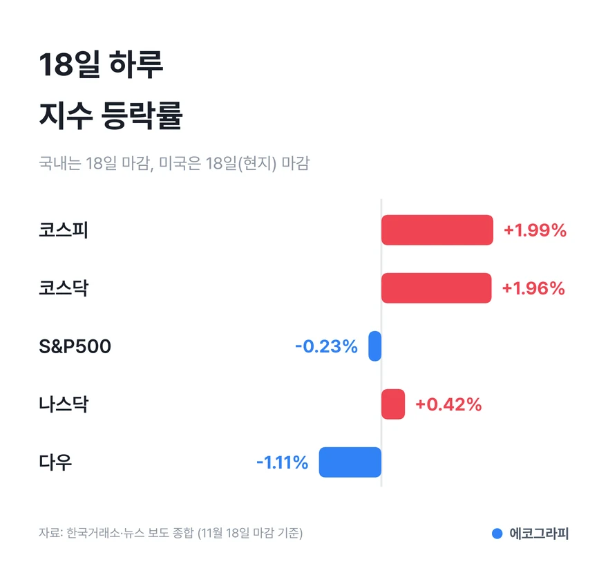
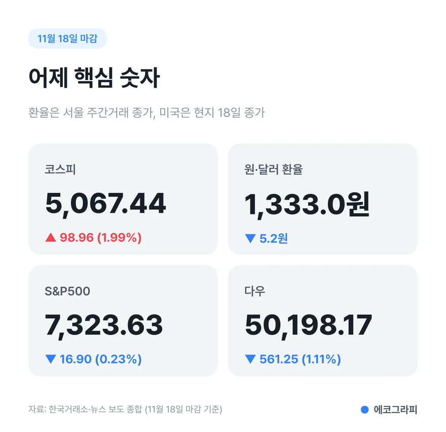
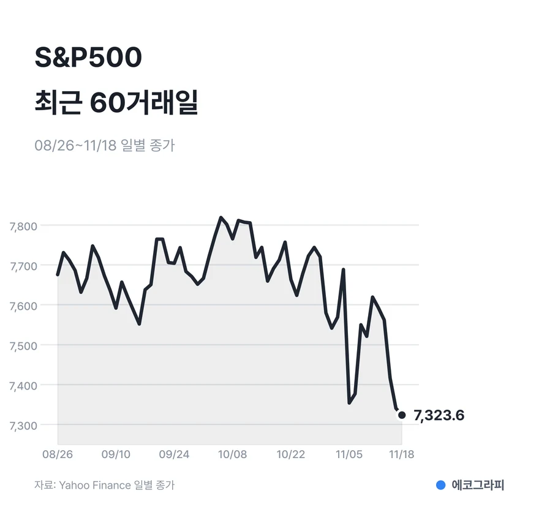
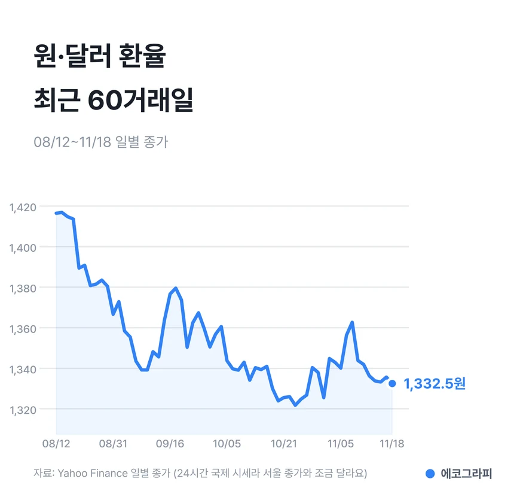
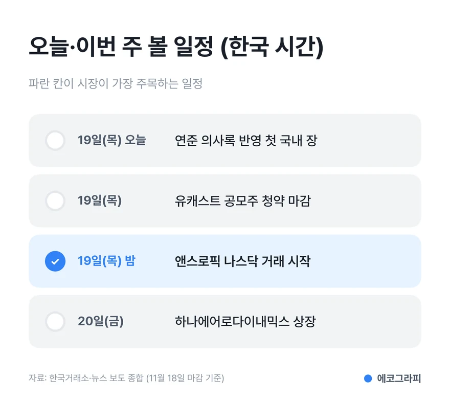

18일 코스피는 98.96포인트(1.99%) 오른 5,067.44에 마감했어요. 전날 5,000선 아래로 내려간 지 하루 만에 다시 올라섰고, 4거래일 연속 하락도 멈췄어요. 장 초반 5,090선에서 출발했다가 한때 5,000선 아래로 밀리기도 했는데, 기관이 사들이면서 다시 올랐어요. 코스닥도 662.81(+1.96%)로 함께 올랐어요.
엔비디아가 시장 예상을 넘는 실적을 내놓자 삼성전자(+2.31%)·SK하이닉스(+4.19%) 같은 반도체 대형주가 반등했어요. 다만 외국인은 코스피에서 약 3,276억 원을 또 팔았어요. 지수를 끌어올린 건 기관 매수였어요. 원·달러 환율은 1,333.0원으로 5.2원 내렸어요.
같은 날 코스닥에 상장한 공모주 이야기는 어제 저녁 글: 에이엘로봇 상장 첫날, 공모가 아래로 마감에 정리해 뒀어요.

미국은 다우 50,198.17(-1.11%), S&P500 7,323.63(-0.23%), 나스닥 24,429.89(+0.42%)로 마감했어요. S&P500은 5거래일 연속 내렸어요.

한국 시간 19일 새벽, 지난달(10월 27~28일) FOMC 회의 의사록이 공개됐어요. 의사록은 회의에서 어떤 의견이 오갔는지 3주 뒤에 정리해 내놓는 기록이에요.
한 줄 정리: 금리가 오르면 기업이 돈을 빌리는 비용이 커져요. 실적이 좋아도 주가가 무겁게 움직이는 이유 중 하나예요.
S&P500은 최근 고점에서 계속 내려와 7,300선 초반에 머물고 있어요. 어제도 조금 더 내려가면서 하락이 5거래일째 이어졌어요.

원·달러 환율은 최근 한 달 동안 1,320~1,360원 사이를 오가고 있어요. 어제는 주가가 오르면서 환율이 조금 내려왔어요.

오늘은 연준 의사록이 나온 뒤 처음 열리는 국내 장이에요. 금리 인상 걱정이 외국인 매매에 어떻게 이어지는지 봐야 해요. 공모주 유캐스트 일반 청약은 오늘 마감이에요(청약 체크 글). 한국 시간 오늘 밤에는 앤스로픽이 나스닥(티커 ANT)에서 거래를 시작해요. 보도에 따르면 공모가는 주당 83달러로, 검토하던 범위보다 높게 정해졌어요.

오늘 해볼 것: 어제 반등이 외국인 매수 없이 나왔다는 점을 기억해 두세요. 오늘 장 마감 때 외국인이 사는 쪽으로 돌아섰는지 확인해 보면 반등의 힘을 가늠할 수 있어요.
외국인은 금리·환율·다른 나라 시장까지 함께 보고 움직여요. 최근엔 미국 금리 인상 걱정이 커서 위험 자산을 줄이는 흐름이 이어지고 있어요. 어제는 기관이 그 물량을 받아냈어요.
이미 좋은 실적을 기대하고 주가에 반영돼 있었고, AI 투자 비용과 금리 부담 같은 걱정이 더 크게 작용했어요. 실적과 주가가 늘 같은 방향으로 움직이지는 않아요.
회의 당일엔 결과만 나오지만, 의사록에는 위원들이 앞으로 어떻게 생각하는지가 담겨 있어요. 그래서 다음 금리 결정을 짐작하는 자료로 써요.
직접 관련은 없지만 AI 기업에 대한 투자 심리를 보여 주는 이벤트라 반도체주 분위기에 영향을 줄 수 있어요.
※ 2026년 11월 기준으로 정리한 글입니다. 세율·제도는 바뀔 수 있으니 거래 전 증권사·국세청 안내를 한 번 더 확인하세요. 특정 종목·상품의 매수·매도 권유가 아닙니다.